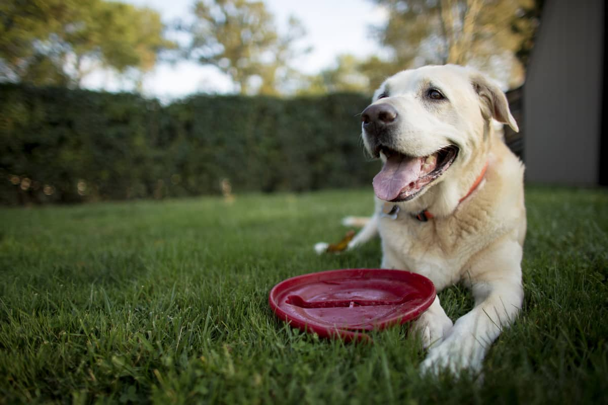

Bacon Q Dog

Bacon Q. Dog is a 9yr old labradoodle. He prefers to spend his days lounging among the three different beds/couches that his family has gifted him. He enjoys a walk or two around the neighborhood, as long as he can pretend that he doesn't see any of the other animals to avoid the embarrassment of not wanting to admit he has no wolf-like skills in chasing them.
At night just as the rest of the family is ready to relax, Bacon suddenly wants to release all of his energy. He will place his toys on a mini couch and frantically drag the couch around, giving his toys "a ride." There is also a lot of rolling. Lots and lots of rolling.
Photo Gallery


Likes
- Belly rubs
- Playing tug-of-war
- Sneaking onto the couch
Skittles The Kat

Skittles, the vibrant and adventurous feline extraordinaire, brings a burst of color and energy to every room. With a sleek coat resembling a mix of sunshine and rainbows, this playful cat is a true character. Skittles earned the title of the neighborhood explorer, fearlessly navigating the alleys and rooftops, always on a quest for new hidden spots and thrilling adventures. Known for a mischievous twinkle in those mesmerizing green eyes, Skittles has a penchant for playful antics, whether it's chasing feather toys or orchestrating elaborate acrobatics. A lover of sunny spots and cozy blankets, Skittles seamlessly balances curiosity and comfort, making every day in the household a delightful and entertaining experience.
Photo Gallery


Likes
- Carob Treats
- Ruining Shoes
- Slouching all day
Chop the Mighty Labrador

Meet Chop, the mighty Labrador with a heart as large as his paws. This loyal canine companion boasts a golden coat that glistens in the sunlight, matching the warmth he brings to every family gathering. With a love for the outdoors, Chop is the quintessential adventure buddy, conquering hiking trails, frolicking in lakes, and embodying the spirit of a true outdoorsman. Despite his impressive physique, Chop is a gentle giant, known for his unwavering loyalty and affectionate demeanor. Whether curling up by the fireplace or enthusiastically greeting visitors with a wagging tail, Chop's presence adds an irreplaceable joy to every moment. His boundless energy and playful antics make him the heart and soul of the family, truly earning the title of the mighty Labrador.
Photo Gallery


Likes
- Big Bones
- Playing with frisbee
- Hugging
Raven the North Keeper

Raven, the North Keeper, is a majestic Siberian Husky with an enchanting coat that mirrors the wintry landscapes she calls home. Her striking blue eyes seem to hold the secrets of ancient snow-covered forests and distant mountains. Raven is the embodiment of strength and grace, effortlessly gliding through snow with a spirit untamed and wild. As a guardian of the North, she possesses an innate sense of adventure, leading her family on thrilling expeditions through frost-kissed trails. Yet, beneath her arctic exterior, Raven is a gentle soul, known for her warm companionship and soothing presence during chilly evenings. Whether under the northern lights or nestled by the fireplace, Raven the North Keeper is a captivating force of nature, bringing the magic of the frozen wilderness to those fortunate enough to share her company.
Photo Gallery


Likes
- Biting Carrots
- Playing on the grass
- Licking Hands
Maple the Mysterious Cat

Maple, the Mysterious Cat, is a captivating feline with an air of enigma surrounding her every move. Cloaked in a rich, autumn-colored fur that mimics the hues of fallen leaves, Maple's presence is both elegant and intriguing. Her eyes, an alluring shade of amber, seem to hold secrets from countless adventures in the mysterious corners of the neighborhood. Maple is a master of stealth, navigating through shadows and perching on high vantage points as if she holds a watchful eye over her mysterious domain. While she may appear reserved, there's an undeniable curiosity that sparks in her gaze, hinting at a deep connection to the mystical world around her. Maple, the Mysterious Cat, is a silent observer, weaving an aura of magic and fascination into the ordinary moments of everyday life.
Photo Gallery


Likes
- Sleeping
- Watching birds
- Yawning